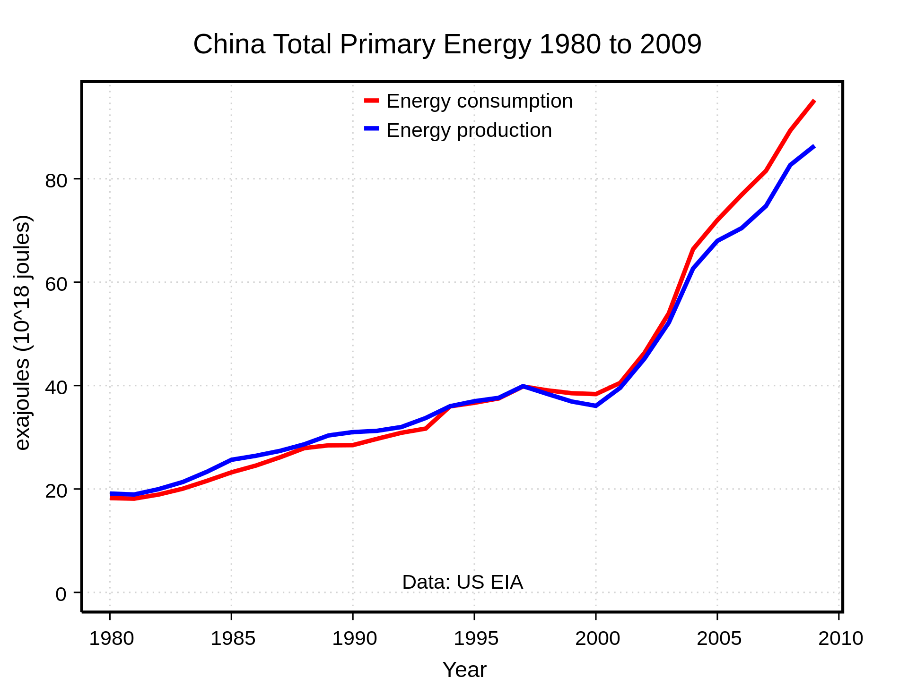

China
Ensuring adequate energy supply to sustain economic growth has been a core concern of the Chinese government since 1949. Primary energy use in China was 26,250 TWh and 20 TWh per million persons in 2009. According to the International Energy Agency, the primary energy use grew 40% and electricity use 70% from 2004 to 2009.
The energy import was three times bigger in 2009 compared to 2004. The share of energy import of the primary energy use was 12% in 2009.
The country is the world's largest emitter of greenhouse gases, with carbon emission growth of 44% from 2004 to 2009. However, from 2010 to 2015 China reduced energy consumption per unit of GDP by 18%, and CO2 emissions per unit of GDP by 20%. On a per-capita basis, it was the world's 42nd largest emitter of greenhouse gases in 2014.

Environment and carbon emissions
On June 19, 2007, the Netherlands Environmental Assessment Agency announced that a preliminary study had indicated that China's greenhouse gas emissions for 2006 had exceeded those of the United States for the first time. The agency calculated that China’s CO2 emissions from fossil fuels increased by 9% in 2006, while those of the United States fell by 1.4%, compared to 2005. The study used energy and cement production data from British Petroleum which they believed to be 'reasonably accurate', while warning that statistics for rapidly changing economies such as China are less reliable than data on OECD countries.
The Initial National Communication on Climate Change of the People's Republic of China calculated that carbon dioxide emissions in 2004 had risen to approximately 5.05 billion metric tons, with total greenhouse gas emissions reaching about 6.1 billion metric tons carbon dioxide equivalent.
In 2002, China ranked 2nd (after the United States) in the list of countries by carbon dioxide emissions, with emissions of 3.3 billion metric tons, representing 14.5% of the world total. However, due to its huge population size (the largest in the world), it only ranked 43 in the list of countries by carbon dioxide emissions per capita, with emissions of 7.6 metric tons per person (compared to 16.4 metric tons per person in the United States). In addition, it has been estimated that around a third of China's carbon emissions in 2005 were due to manufacturing exported goods.
Since 2006, China has overtaken the USA, producing 8% more emissions than the US to become the worlds biggest emitter of pollution.